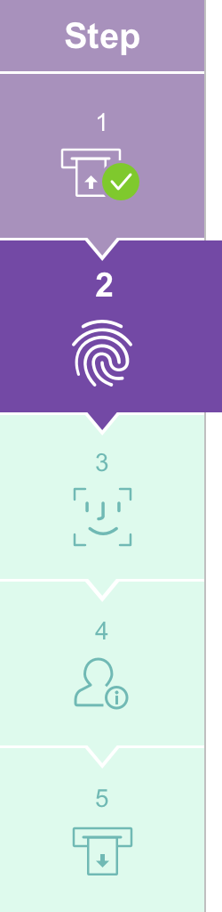
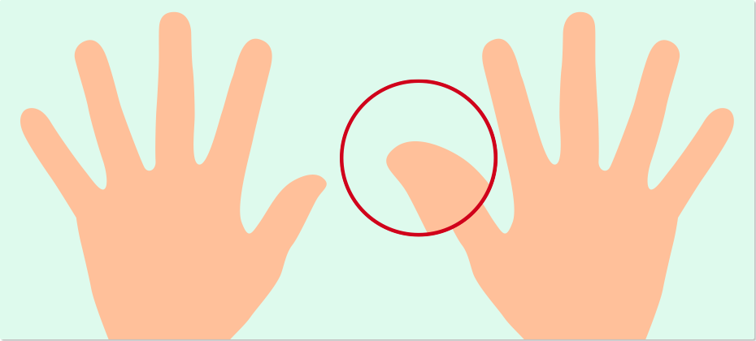

<div class="mainPanel">
    <sc2-timer (timerExpired)="timeExpire()" class="timer"></sc2-timer>
    <input class="buttonTC" type="button" value="{{'SCN-GEN-STEPS.LANGUAGE' | translate}}" (click) = "langButton()">
    
    <p class="steps-div">{{'SCN-GEN-STEPS.NAVIGATION' | translate}}</p>
    <sc2-confirm #modalRetry>
        <div class="app-modal-body">
            <div class="modal-message">
                {{messageRetry | translate}}
            </div>
            <div class="buttonDiv">
                <button type="button" class="btnModal confirm" (click)="failTryAgain()"><span>{{'SCN-GEN-STEPS.YES' | translate}}</span></button>
            </div>
        </div>
    </sc2-confirm>
    <sc2-confirm #modalFail>
        <div class="app-modal-body">
            <div class="modal-message">
                {{messageFail| translate}}
            </div>
            <div class="buttonDiv">
                <button type="button" class="btnModal confirm" (click)="processFailQuit()"><span>{{'SCN-GEN-STEPS.YES' | translate}}</span></button>
            </div>
        </div>
    </sc2-confirm>
    <sc2-confirm #modalNoROP>
        <div class="app-modal-body">
            <div class="modal-message">
                {{'SCN-SCK-COMMON.TIMEOUT-NO-RESPONSE' | translate}}
            </div>
        </div>
    </sc2-confirm>
    <sc2-confirm #modal1>
        <div class="app-modal-body">
            <div class="modal-message">
                {{messageAbort | translate}}
            </div>
            <div class="buttonDiv">
                <button type="button" class="btnModal confirm" (click)="backRoute()"><span>{{'SCN-GEN-STEPS.YES' | translate}}</span></button>
                <button type="button" class="btnModal cancel" (click)="modal1.hide()"><span>{{'SCN-GEN-STEPS.NO' | translate}}</span></button>
            </div>
        </div>
    </sc2-confirm>
    <!-- <sc2-process-comp #processing></sc2-process-comp> -->
    <label class="label1" >{{'SCN-GEN-STEPS.PLACE-RIGHT-FP' | translate}}</label>
    
    <!--   (click)="nextRoute()" -->
    
    <!-- <input #imgNext type="hidden" (click)="nextRoute()"> -->
    <input type="image" src="../../../assets/images/button_Abort.png" class="exitButton" (click)="modal1.show()" />
    <input class="exitButton" type="button" value="{{'SCN-GEN-STEPS.ABORT' | translate}}" (click) = "modal1.show()">
    <label class="footerSteps">scn-gen-step-001</label>
</div>